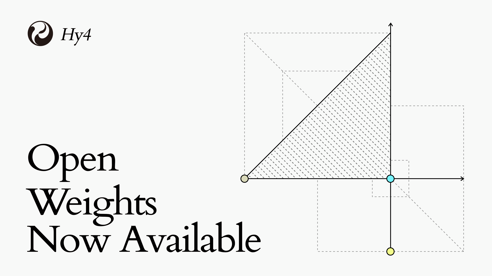
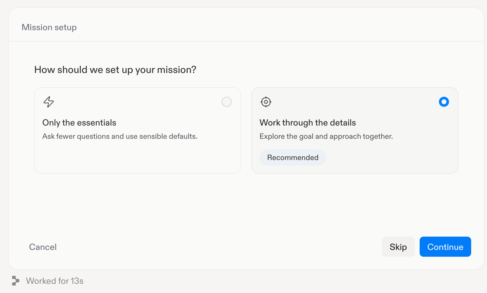
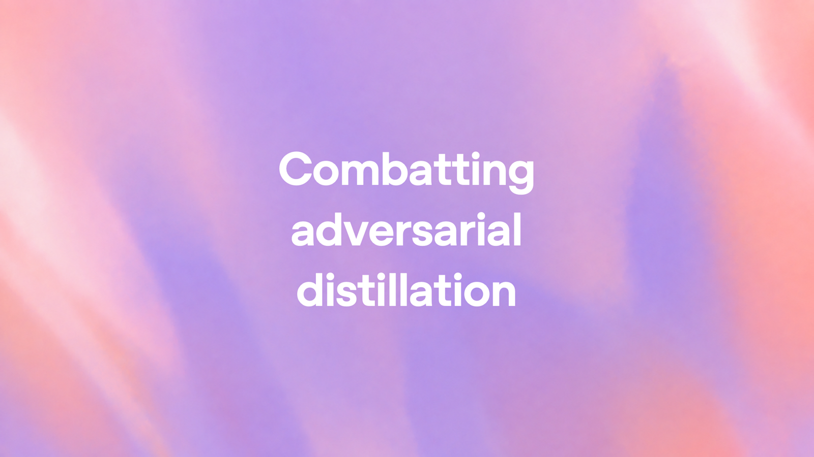

AI Intelligence Daily · 2026-11-21（周六）
统计窗口：2026-11-20 08:00 → 2026-11-21 08:00（上海 / Asia/Shanghai）· 事实与判断分区 · 国内/国际双轨 · 承接 Daily 11-20；11-20 白天快讯仅 13:00 PUSH（Hy4 旗舰权重 + System Card，UPDATE **189**），08:59 / 10:57 / 15:01 / 16:56 / 18:54 / 20:55 / 22:55 均为 SILENT，最近扫描覆盖至约 14:55Z。本报吸收日间 near-miss，并补全 14:55Z 之后的隔夜切片。· 已在售 Desktop/CLI：主窗能力向变化是 **Qoder 0.5.16** 跨网远程控制与 Agent Teams（官方 changelog 日期 11-19，本窗官方页首次顶出；0.5.17 为抛光）· 补收 **Replit Missions**（官方博客日期 11-17，本窗 11-20 changelog 与 @Replit 23:30Z 周报对外说明；Local Work 在 Replit Desktop 宣布 GA）· 点版本：Factory CLI+Desktop **1.16.0** · Kimi Code Desktop **1.4.2** / CLI **2.7.2**（窗内经 1.4.1 / 2.7.1）· Codex latest **0.171.0** · Claude Code latest **2.1.330** · MiniMax CLI **0.7.9** · StepCode **0.1.8** · Antigravity App **v2.34.0**。持平或仅旁支：Copilot CLI latest 仍 **1.0.114**（prerelease 已至 1.0.115-3）· Qwen Code latest 仍 0.28.0 · CodeBuddy latest 仍 2.185.0 · 千问办公仍 2.1.0 · OpenCode 2.x 仍 v2.3.2 · VS Code 稳定版仍 1.147.0 · MCP servers 仍 v2.5.0 · Antigravity CLI 仍 1.5.13 · dsh latest 仍 0.2.2-rc.5（RC）· 讯飞 WinWork 仍 V1.1.27 · 小艺 Work 仍 0.7.7。MiniMax Desktop CDN 已指向 **3.1.17**、ZCode CDN 可见 **3.19.1**，但两边官方 changelog 仍分别停在 3.1.16 与 3.18.2，不写成已发船。★（约 08:16 CST，相对 Daily 11-20 约 08:18 CST，约 24 小时）：deepseek-harness **284,698**（+496）· open-code-review **54,772**（+390）· agent-desktop **25,764**（+222）· opencode **228,252**（+207）· agent-browser **53,081**（+198）· chrome-devtools-mcp **58,538**（+176）· dsh-superagent-prototype **24,078**（+125）· chat-demo **5,121**（+98）· kimi-code **8,273**（+9）· DeepInfer **26,259**（+23）· servers **92,133**（+19）· codex-security **14,223**（+30）· code-verification **289**（+1）
今日一句话判断
今天把 Anthropic 从「已经开盘」写成「已经交割」的，是公司自己的收官公告：超额配售全部行使后，A 类公开发行合计 11.27 亿股、毛所得约 935 亿美元，同时又向 AMD、Broadcom、Google、Micron、Microsoft、NVIDIA 和 TSMC Partners 私募出售 3.13 亿股 N 类股票、约 260 亿美元，两项合计毛所得约 1,195 亿美元（均未扣承销费用）。 对工程更有直接意义的，是腾讯把预告已久的 Hy4 旗舰权重复现为可下载仓库和 System Card，以及 OpenAI 把「受保护推理轨迹不得被抽去训练无护栏模型」写成可核验的防御说明。Replit Missions 虽在 11-17 的官方博客就已发布，此前三期日报漏收，今天随官方 changelog 与账号周报补记：它把目标、预算和批准边界做成多 Agent 协作的产品前提。不要把部分国内转载里的「Apache 2.0」写进 Hy4 正式版许可，也不要把尚未被帮助中心同步的「非美商户可发布 Agent」推文，直接写成政策已经改完。
专栏一｜新闻
本栏结构：
- 国际头条：Anthropic 完成 IPO 交割，并同步关闭对芯片与云厂商的 N 类私募（UPDATE 270）
- 国内头条：混元 Hy4 旗舰权重与 System Card 开源（快讯 13:00 已推；UPDATE 189）
- 国际中栏：补收 Replit Missions（官方博客 11-17；本窗 changelog / 官方 X 周报）与 Desktop Local Work GA（NEW 283）
- 国际中栏：OpenAI 发布对抗性蒸馏与受保护推理防御（NEW 284）
- 国际中栏：ChatGPT Space 向全球 Plus（18+）滚动开放（NEW 285）
- 国内中栏：Qoder 0.5.16 支持跨网连接设备、远程控制与 Agent Teams 协作（NEW 286）
- 国际中栏：Codex latest 0.171.0（目录接入 GPT-6.2，并新增远程会话入口）
- 短讯：Factory 1.16.0、Kimi 补丁、Claude Code 2.1.330、CDN 滞后版本，以及一条官方推文与帮助中心尚未对齐的商户 Agent 政策线索
排序依据：重要度 → 与两条主线的相关性 → 时效。交割和私募改写的是 Anthropic 作为上市公司的资本结构与供应方绑定；Hy4 把国内一线旗舰从「可调用」推进到「可自托管并对照安全卡片」；Missions 和 Qoder 则分别从预算约束的多 Agent 目标，以及跨设备远程控制，碰到 Work / Agent 引擎的调度面。
1. Anthropic 宣布 IPO 交割完成：超额配售全部行使，并同步向七家芯片与云厂商私募约 260 亿美元
S · UPDATE · 国际 · I/J · 隔夜 · watchlist **270** · 非产品发船
发生时间：官方新闻稿标注 Nov 20, 2026。22:55 快讯已核到 /news/ipo-close 上线（页面记录 _updatedAt=2026-11-20T12:41:01.161Z，即 20:41 CST / 07:41 EST），当时按已预告的惯例交割不打断，把数字留到本报完整展开。定价短稿此前写明预计 11-20 close；纳斯达克常规交易日为美东 11-20。
发生了什么
Anthropic 官方新闻稿宣布，首次公开发行已经交割：A 类普通股合计 1,127,000,000 股，发行价仍为 83.00 美元，其中包含承销商超额配售权的全部行使（额外 147,000,000 股）。公司出售 1,103,351,354 股，售股股东出售 23,648,646 股。公开发行毛所得约 935 亿美元，公司获得约 916 亿美元；售股股东部分公司不得款。股票已于 11-19 在纳斯达克全球精选市场以代码 ANT 开始交易。
同一篇稿还写明：公司同步交割向 Advanced Micro Devices、Broadcom、Google LLC、Micron、Microsoft、NVIDIA、TSMC Partners 出售合计 313,253,007 股 Class N 普通股，价格同为每股 83.00 美元，私募总价约 260 亿美元；该部分未按《证券法》注册。IPO（含售股股东出售）与私募合计毛所得约 1,195 亿美元，均未扣除承销折扣、佣金及其他发行费用。主承销为 Goldman Sachs 与 Morgan Stanley。SEC 相关注册声明于 11-18 生效。
这些数字是定价短稿、Daily 11-19 / 11-20 和此前 watchlist 270 都没有写过的：当时只核到 9.80 亿股定价、最多再售 1.47 亿股的期权，以及首日开盘 111.50 美元（纳斯达克新闻室）与收盘 97.17 美元（CNBC）。本报不把媒体市值或未经官方公布的总股本写成第一方事实，也不在未核到官方数据的情况下补写 11-20 当日收盘价。
我的判断
判断：这是上市流程里事先就标明的交割日落地，不是新的产品或模型发布；但它第一次把「超额配售是否行使」和「与哪些计算供应商同步绑定」写成了公司自己的数字。935 亿与 260 亿都是毛所得口径，不能直接当成公司入账净额，更不能据此反推总市值。私募名单覆盖了设计、代工、存储和云，说明这次融资同时在处理资本与供给关系。短期看，信息披露密度会继续上升；长期看，真正需要跟踪的是后续定期报告里的计算支出、产能安排和治理条款，而不是交割日本身的交易情绪。
未来影响
Anthropic 此后的模型发布、企业合同和安全披露，会被放在上市公司与战略股东的双重框架里阅读。这未必改变 Claude 的技术路线，但会改变外部如何理解其算力成本和供应约束。对竞争对手而言，这是一个可被引用的融资与绑定样本，而不是当天就要改产品设计的信号。
对智能体互联网
无新的互操作协议或身份标准。若后续定期披露开始更完整地讨论连接器、代理权限或安全事件，那会变成可跟踪的治理信号，而不是今天的事实。
对 Work / Agent 引擎
无直接 Harness 发船。启示仍是：采购和路线对照时，要把产品声明、发行文件和战略股东关系分开看，不要把融资规模理解成运行时能力。
值得进一步做什么
- 把
/news/ipo-close与招股说明书对照，记下 A 类发行与 N 类私募的不同流通和披露含义。 - 继续以公司公告和交易所文件为准，不把媒体市值写入内部假设。
- 暂不必因为交割数字改引擎设计。
配图
见图 1（官方交割新闻稿页配图，来源页 Anthropic announces closing of initial public offering…）。

真实来源
- 主来源：https://www.anthropic.com/news/ipo-close
- 补充：https://www.anthropic.com/news/anthropic-prices-initial-public-offering
- 此前首日价格：https://www.nasdaq.com/newsroom/anthropic-marks-ipo-at-nasdaq ；https://www.cnbc.com/2026/11/19/anthropic-ipo-ant-live-updates.html
2. 腾讯混元兑现 Hy4 旗舰权重开源，并发布 System Card
强A · UPDATE · 国内 / 双边 · H/G/A/C · 日间 · watchlist **189** · 快讯 13:00 已推 · 非 Desktop 发船
发生时间：Hugging Face tencent/Hy4 / Hy4-FP8 / Hy4-base 的 lastModified 为 2026-11-20T03:05:49–03:05:54Z（11:05 CST）；GitHub Tencent-Hunyuan/Hy4 pushed 02:46:39Z（10:46 CST）；官方 X 主帖 03:52:40Z（11:52:40 CST）。随后 @TencentHunyuan 于 04:45:02Z 感谢 Together AI 上架，07:21:45Z 转发 vLLM Day-0 支持，16:15:51Z（11-21 00:15 CST） 发帖为预告中的 AMA 邀请提问。
发生了什么
腾讯混元宣布开源 Hy4 正式版权重：官方表述为原生多模态旗舰 MoE，总参数 770B、激活 49B、1M 上下文，并同时发布 Hy4 System Card。这不是新的模型首发——正式版 API / 产品已在 11-4 上架，当时快讯已写明「权重计划开源，系统卡片随权重」——而是把预告兑现为可下载的权重与安全评估文件。官方模型卡写明同步开源三套权重：指令微调 Hy4、FP8 量化 Hy4-FP8，以及预训练底座 Hy4 base（官方提醒 base 不是对话模型）。仓库已出现在 Hugging Face、ModelScope、GitCode 和 GitHub。官方 README 还链到社区量化仓 AngelSlim/Hy4-GGUF，这只是量化格式入口，不等于官方主仓本身。
许可必须单独写清：正式版使用 Tencent Hy License, Version 1.0，由 Apache 2.0 派生，但许可证正文写明「This License is not the Apache License, Version 2.0」。第 10 节为大型 MaaS 附加商业条款：若任一连续 12 个月全球总收入超过 5,000 万美元，或所提供产品/服务单月活跃用户超过 1 亿，以 MaaS 方式使用该作品或其衍生作品前须另行取得书面许可。不要把部分国内转载里的「Apache 2.0」写成正式版许可；Apache 2.0 适用于更早的 Hy4 preview，不适用于今天的正式版权重。Hy4 flash 用的也是同一套 Tencent Hy License，不能对比成「正式版更开放」。
同窗还出现了分发与推理适配：Together AI 已上架（第三方，定价以该平台为准）；官方转发称 vLLM 已提供 Hy4 Day-0 支持（文本/图像/视频）。AMA 已按预告在 11-21 00:15 CST 左右开始邀请提问。本报未见随后足以改写许可、参数口径或部署路径的新官方纪要。模型卡中的视觉与 Computer Use（CLI/GUI）是 11-4 已公布的能力，今天新的是这些能力对应的权重可被自托管。
我的判断
判断：这是一条兑现，而不是新的能力宣言。对开源旗舰格局的意义在于：国内一线 770B 级多模态正式版终于可以在自有基础设施上对照，而不只是停在调用侧。短期信号是可下载、可部署、可对照安全卡片；长期信号取决于许可在真实部署里的可操作性、vLLM / SGLang 等框架的 Day-0 路径，以及 System Card 对网络与生物安全的具体结论是否经得起复读。今天没有新的官方基准首发需要改写 11-4 当时的能力判断。
未来影响
若自托管路径在主流推理框架里很快可用，Hy4 会成为国内可私有化的旗舰对照物之一。但 MaaS 大客户条款意味着：把它做成对外通用模型服务，和把它嵌进自有产品，走的不是同一条许可路径。媒体把正式版写成 Apache 2.0，会直接误导合规判断，后续引用必须以许可证正文为准。
对智能体互联网
无新的跨厂协议或身份标准。有间接启示：若要把 Hy4 作为对外模型服务提供，许可证第 10 节把「自用 / 产品内嵌」和「通用 MaaS」分开了，这会影响谁能合法地把该模型接进 Agent 服务网络。Computer Use 仍是模型能力，不是可被发现、授权和互操作的独立 Agent 服务。
对 Work / Agent 引擎
直接相关。现在可以按官方模型卡做自托管评估：1M 上下文、视觉理解，以及官方写明的 CLI/GUI computer-use 工作流。评估面从 API 扩展到了可私有化的权重，但还不能假设它已经能直接替换现有 Desktop / Harness 运行时。
值得进一步做什么
- 精读 System Card 与许可证第 10 节，明确自用、产品内嵌和对外 MaaS 的边界。
- 按官方 README 核对 vLLM / SGLang 部署，以及 Hy4 base 是否只适合继续训练。
- 把正式版与已开源的 Hy4 flash、Hy4 preview（Apache 2.0）分开对照。
- 关注 AMA 若出现官方纪要，再决定是否更新判断。
配图
见图 2（官方 X 主帖附图，来源页 @TencentHunyuan 11:52 CST 主帖）。

真实来源
- 主来源：https://x.com/TencentHunyuan/status/2123625549147070538
- https://huggingface.co/tencent/Hy4
- https://huggingface.co/tencent/Hy4/blob/main/LICENSE
- https://hy.tencent.ai/Hy4_system_card.pdf
- https://github.com/Tencent-Hunyuan/Hy4
- 补充：https://x.com/TencentHunyuan/status/2123638726601621727（Together AI 上架）；https://x.com/TencentHunyuan/status/2123678166866919610（vLLM Day-0）
- 快讯归档：flashes/2026-11-20-1300.md
3. 补收 Replit Missions：先约定目标、预算和批准边界，再让 Agent 群规划、构建、测试和迭代
A · NEW（补收） · 国际 · C/B · 官方博客 11-17，本窗 changelog / 官方 X 周报 · watchlist **283**
发生时间：官方博客 Introducing Replit Missions 标注 Published: Nov 17, 2026，Updated: Nov 19, 2026。Daily 11-18 / 11-19 / 11-20 均未收录。本窗 11-20 changelog 将其列为当日新能力，@Replit 于 2026-11-20T23:30:01Z（11-21 07:30:01 CST） 的 This Week 帖再次说明。同一份 11-20 changelog 还写明：Replit Desktop 的 Local Work 现已在 Windows / Mac / Linux 一般可用。
发生了什么
Replit 推出 Missions：用户先定义要达成的结果，并在开始前约定成功标准、预算和需要批准的动作；平台再协调一组 Agent 去规划、构建、测试和迭代，直到达到标准或预算用尽。官方自用案例是：在 2 天、3,000 美元预算 内，让 Agent 群搭建可自托管的应用监控平台 DataCat（仪表盘、告警与 tracing），并对照可量化的性能与可靠性目标做测试。官方强调，团队不必自建多 Agent 调度基础设施。
11-20 changelog 还宣布 Local Work 在 Replit Desktop 一般可用：用户选择 Agent 可访问的本地文件夹，描述要构建或修改的内容，并在本机查看结果。官方表述为「模型在云端运行，代码在你的计算机上、在由 Microsoft 提供能力的沙箱中运行」（@Replit 同日另一条 Desktop 介绍帖）。同日 changelog 另有 Workspace 搜索与固定、Microsoft Fabric 集成 GA、Microsoft Teams 集成 GA，以及发布应用到 Azure 的早先预览，本报不把这些企业集成单独升格为头条。
我的判断
判断：这是一条应当补收的工作面发船。它重要的不是「又一个多 Agent 演示」，而是把成功标准、花费上限和批准边界写成任务开始前的协议，而不是跑起来之后再补闸。DataCat 是官方自己的案例，不能当成第三方复现结论。Local Work GA 则补上了另一条线：云端模型 + 本地执行，并明确文件夹授权。两者合在一起，说明 Replit 想同时覆盖「长目标的群协作」和「落在本机文件上的受控执行」。
未来影响
若「先签约预算和批准边界，再放群」成为可复制的产品模式，Work Agent 的默认单元就不再只是单次对话或单次仓库任务，而可能是带预算和停机条件的任务合约。这会推动调度、审计和人机接管点前移。它目前仍是 Replit 平台内的能力，还不是开放的跨厂任务协议。
对智能体互联网
无新的跨厂发现或身份标准。有间接启示：跨 Agent 协作若只有能力编排、没有预算和批准边界，就很难被企业当作业务委托来用。Missions 把这些约束放在任务开始之前，是一种可参考的委托接口，但还停在单一平台里。
对 Work / Agent 引擎
直接相关。可对照的设计点包括：开始前澄清成功标准；花费上限；哪些动作必须批准；在聊天中跟踪进度并以约定标准验收；以及 Desktop 上按文件夹授权的本地执行。若自建 Harness 仍默认「先跑起来再看花费」，会越来越不像可管理的工作引擎。
值得进一步做什么
- 精读官方博客与 changelog，核对预算、批准和停机条件的实际控制点。
- 对照 Local Work 的文件夹授权与沙箱边界，评估是否可借鉴。
- 关注是否出现可导出的任务合约或外部 API，而不是只停在产品演示。
配图
见图 3（官方 11-20 changelog / 文档中的 Missions 规划界面截图，来源页 November 20, 2026 changelog）。

真实来源
- 主来源：https://replit.com/blog/introducing-replit-missions
- https://docs.replit.com/updates/2026/11/20/changelog
- https://x.com/Replit/status/2123921837729919179
4. OpenAI 说明如何防御对抗性蒸馏，并把 GPT-6.2 的受保护推理绑在产生它的对话历史上
A · NEW · 国际 · G/A · 隔夜 · watchlist **284**
发生时间：官方文章 Combatting adversarial distillation 标注 November 20, 2026；@OpenAI 2026-11-20T19:33:37Z（11-21 03:33:37 CST） 发帖。
发生了什么
OpenAI 发布专文，说明如何检测和打断对抗性蒸馏：即未经授权地用前沿模型输出去训练另一套具有相近能力、但缺少相应护栏的模型。官方特别强调保护 protected reasoning（模型在给出最终答案前生成的中间推理 / chain-of-thought），因为这些轨迹可能包含最终答案里没有的信息，因而更适合被用来当训练数据。防御被写成两层：请求级（模型行为、分类器、API 控制）与活动级（跨请求和账户的协同抽取模式），并与生物、网络安全护栏更对齐。
对 GPT-6.2 Astra 和 Sol，官方写明：受保护推理被绑定在产生它的对话历史上；随着新消息加入，模型可以继续使用先前推理；若更早的消息被改写，API 会丢弃其后依赖的推理。官方还写明，会阻止护栏较弱的旧模型系列读取 GPT-6.2 的受保护推理。内部自适应红队评估给出的数字是：从带原有护栏的 GPT-6 Astra 上 54.0% 的平均攻击成功率，降到带更新护栏的 GPT-6.2 Astra 上的 0.2%。这是官方内部评估，不是第三方复测。文中还有一组实验：用精确推理轨迹微调的学生模型，在监督微调后通常优于只用推理摘要训练的学生；在随后的强化学习后，两者互有胜负，取决于推理预算。
我的判断
判断：这件事的产品含义，不只是「又一篇安全研究」。它把推理轨迹当成需要按会话封存的敏感产物，并明确拒绝「改历史还能继续读到旧推理」以及「把新模型的推理交给旧模型家族去读」。对做 Harness 的人来说，这是在把上下文、记忆和模型间交接从便利功能，改写成安全边界。54.0% 到 0.2% 只能作为官方自我评估来引用，不能写成已经消除了蒸馏风险。
未来影响
若这种「推理与对话历史绑定、跨模型家族隔离」成为前沿 API 的默认假设，多 Agent、会话交接和蒸馏式训练管线都要重新检查：能带走的是最终答案、摘要，还是完整轨迹。它也可能促使其他实验室公开类似的请求级与活动级防御，否则只靠模型拒答会显得不够。
对智能体互联网
直接相关。跨 Agent 或跨模型调用如果默认共享完整推理轨迹，就会把本应留在原会话里的中间状态变成可被抽走的训练数据和攻击面。委托和 Trust 需要区分：对方被允许看到结论，并不等于被允许看到推理。
对 Work / Agent 引擎
直接相关。会话编辑、子 Agent 抄本、跨 Harness 交接（例如把 Codex / Claude Code 的过程接到另一桌面）都要面对同一问题：交接物是对话文本、工具状态，还是受保护推理。默认策略应倾向更窄的导出面，并把「改写历史后丢弃后续推理」视为可借鉴的一致性规则。
值得进一步做什么
- 精读官方原文与所链 API 行为说明，核对会话改写、跨用户 / 工作区 / 组织边界的实际限制。
- 对照自建日志和会话交接，检查是否默认保存了不该导出的推理轨迹。
- 把 54.0% / 0.2% 仅作官方自评引用，等待第三方复测。
配图
见图 4（官方文章页社会分享配图，来源页 Combatting adversarial distillation）。

真实来源
- 主来源：https://openai.com/index/combatting-adversarial-distillation/
- https://x.com/OpenAI/status/2123862344422088794
5. ChatGPT Space 向全球 Plus（18+）滚动开放，并替换侧边栏里的 Library
B · NEW · 国际 · C/K · 隔夜 · watchlist **285**
发生时间：ChatGPT 官方 Release Notes 以 November 20, 2026 为顶条，写明「Starting today」；@ChatGPT 2026-11-20T18:48:11Z（11-21 02:48:11 CST） 发帖。
发生了什么
OpenAI 在帮助中心更新说明：ChatGPT Space 开始向全球 Plus 用户（18 岁及以上）滚动开放。用户可在 Space 里与 ChatGPT 一起创建交互式页面和演示文稿，并邀请其他已有 Space 访问权限的人共同编辑；也可以让页面和幻灯片根据已连接的应用与工具自动更新。官方举例包括会随反馈更新的待办、带可探索 3D 模型的学习指南，以及能同步 Slack 决策的项目计划。若用户拥有 dot，也可以邀请它一起协作。打开共享页面或演示需要相应查看权限，且须登录具有 Space 访问权限的 Plus / Pro / Business / Enterprise 账号；Free 无法打开共享内容，也没有公开链接。Space 在侧边栏中替换 Library，成为页面、幻灯片、图像和上传文件的新入口，并可在 Web、桌面应用以及 iOS / Android 上创建和编辑页面。
我的判断
判断：这是消费级协作工作面的扩面，不是新的 Agent 协议或 Desktop 运行时。它值得记下一笔，是因为「人与 ChatGPT 共编可自动更新的页面 / 幻灯片」，再加上可邀请 dot，已经接近个人工作区里的轻量 Agent 协作，而不是单纯的聊天附件。限制也很清楚：有年龄和使用计划门槛，没有公开链接，Free 不能打开共享内容。
未来影响
若 Space 成为 Plus 用户的默认文档和演示层，ChatGPT 就会更多占用「可协作的工作产物」而不是「对话记录」。对企业而言，自动更新和连接应用会把权限、审计和数据来源问题带到页面本身。现在还不宜把它写成 Agent OS。
对智能体互联网
无直接的跨厂协议启示。dot 可被邀请进同一文档，是产品内的委托，还不是可发现的外部 Agent 服务。
对 Work / Agent 引擎
有限相关。可观察的是：工作产物开始有自己的空间、权限和自动更新，而不只是聊天附件；协作对象可以是人和 dot。自建工作区若仍把输出当一次性消息，会和用户已经习惯的「可继续共同编辑的对象」拉开差距。
值得进一步做什么
- 对照官方帮助页，看自动更新实际能连接哪些应用、权限如何授予。
- 关注是否扩到企业默认工作流，或出现对外嵌入。
- 暂不必把它当引擎运行时接入。
真实来源
- 主来源：https://help.openai.com/en/articles/6825453-chatgpt-release-notes
- https://help.openai.com/en/articles/20001549-getting-started-with-space-in-chatgpt
- https://x.com/ChatGPT/status/2123850912867471807
6. Qoder 0.5.16：可把同一账号下的设备跨网连起来，做远程控制并和 Agent Teams 协作 Issue
B · NEW · 国内 · C/B/E · 日间 · watchlist **286** · Desktop 能力更新
发生时间：官方 changelog 将 0.5.16 标注为 November 19, 2026。Daily 11-20 截稿时同页仍顶 0.5.14；本窗 15:01 快讯首次看到新顶条，随后 20:55 扫描见到 0.5.17（November 20，Everyday Polish，4 条修复加引导图适配）。无官方 X 发船帖。
发生了什么
Qoder 0.5.16 的官方标题是 Connect Your Devices Across Networks。关键能力包括：在同一账号下、跨越不同网络连接设备；在目标设备上打开 Allow control 后，可访问你有权限的工作区与任务。用户可以从本地或已同步的远程会话中选择已完成的消息，把消息和输出文件保存到本机，或发到可发帖的讨论、同一项目中的 Issue。若账号支持项目协作，可以把 Issue 分配给 Agent Teams、重新指派，并看到哪些运行需要人工介入；从评论启动运行会保留原来的 Issue 分配。在公开市场分享可用的前提下，还可用链接分享合格的插件和独立 Skill。此外支持打开带密码的 Word / Excel 并在保存时保持加密，以及用 URL 或本地文件配置 PAC 代理。0.5.17 没有增加互联或远程能力，只做插件引导图和启动 / 插件 / 错误提示修复。
我的判断
判断：在当天一众点版本里，这是国内 Desktop 里最值得单独写下的一条。它把「远程控制另一台已登录设备上的工作区 / 任务」和「把 Issue 交给 Agent Teams 并保留人工介入点」写进了正式更新说明，而不只是修体验。官方日期写成 11-19，但本报以官方页首次顶出为准收录，避免因为 changelog 标注日期而漏掉。授权模型仍很关键：跨网控制依赖同一账号和目标设备上的 Allow control，不等于开放的远程运行时协议。
未来影响
若跨网远程控制和 Issue-到-Agent-Teams 的指派能在真实项目里用稳，国产编码 Desktop 就会更多从单机对话窗，走向「多设备 + 多 Agent + 人工接管点」的工作面。这会把权限、会话同步和任务所有权问题提前放到产品里。
对智能体互联网
无跨厂发现协议。有限启示是：设备与任务的远程访问，仍然建立在同一账号和显式允许控制之上；链接分享插件 / Skill 是能力分发，还不是可注册的外部服务网络。
对 Work / Agent 引擎
直接相关。可对照的点包括：跨网设备连接与目标端授权、远程会话中的消息和产物回传、Issue 与 Agent Teams 的分配 / 再分配、需要人工介入的可见性，以及从评论启动时保留原指派。这些都比「再加一个聊天窗口」更接近多租户和远程执行的产品化。
值得进一步做什么
- 对照官方说明，核远程控制的权限范围：能看工作区、能改文件，还是也能批准高风险动作。
- 把 Agent Teams 的 Issue 指派和人工介入提示，纳入工作流对照。
- 0.5.17 仅作抛光跟踪，不必单列行动。
真实来源
- 主来源：https://qoder.com/changelog
7. Codex 0.171.0：目录加入 GPT-6.2，并新增 codex exec --remote 与 TUI 远程入口
B · NEW · 国际 · B/C · 日间 · 已在售 CLI 点版本
发生时间：GitHub 稳定版 rust-v0.171.0 published 2026-11-20T00:44:47Z（08:44:47 CST）；npm @openai/codex@0.171.0 latest 00:51:29.762Z。相对 Daily 11-20 的 latest 0.170.0。alpha 本窗另见 0.173.0-alpha.1 至 0.173.0-alpha.3（22:31:49Z），不以预发通道写成已发船。
发生了什么
Codex 稳定通道升到 0.171.0。发行说明包括：目录加入 GPT-6.2 Sol / Astra（Sol 为默认目录选项）；默认打开 TUI workspace（文档 / 图片预览与子 Agent 抄本）；非 Vim 提示框可配置撤销 / 重做；新增 codex exec --remote <ADDR> 以及 TUI 的 /rc、/remote；可选 MCP 状态行。这是已在售 CLI 的稳定点版本，不是新的 Desktop 客户端。
我的判断
判断：真正值得记下的是远程会话入口和 TUI 对子 Agent 抄本的一等展示，而不是版本号本身。它说明 Codex 也在把「连到别处执行」和「看见子 Agent 过程」写成默认工作面的一部分，与昨日 Antigravity SSH、Kimi 会话交接是同一方向上的不同实现。
未来影响
远程执行入口会继续把 CLI 从本机循环，推向可寻址的执行节点。下一步要看 --remote 的鉴权、权限和会话恢复是否足够清楚，否则它只是又一个 SSH 风格的快捷方式。
对智能体互联网
无新协议标准。远程地址若成为常见调用方式，最终仍要补上身份和授权，而不是只给一个 ADDR。
对 Work / Agent 引擎
直接相关。可对照：模型目录默认项、TUI workspace 对文档 / 图片 / 子 Agent 抄本的展示、远程执行入口，以及 MCP 状态是否可见。
值得进一步做什么
- 阅读
rust-v0.171.0发行说明，核--remote//remote的实际鉴权与能力范围。 - 关注稳定通道是否继续跟进 0.173 的预发改动。
- 不必因点版本改整体路线。
真实来源
- 主来源：https://github.com/openai/codex/releases/tag/rust-v0.171.0
短讯
- Factory CLI+Desktop 1.16.0（官方 changelog 日期 November 20；npm
droid/@factory/cli02:05–02:06Z）：点击登录和 MCP 授权链接、Script 步骤标题、多项修复；非 Enterprise 计划将无法关闭会话内容同步，设置显示为锁定；Legacy Cloud workspace 会话改为只读历史，不能重启或下载。属已在售点版本，不单列。来源：https://docs.factory.com/changelog/releases/1.16.0.json - Kimi Code Desktop 1.4.1 / 1.4.2 与 CLI 2.7.1 / 2.7.2：均为 1.4.0 / 2.7.0 之后的 Patch Changes（含 thinking effort 回退修复）。Desktop 1.4.2 published 09:19:47Z，CLI 2.7.2 npm 09:15:06Z。文档站 changelog 此前已经滞后，本报不以文档站顶条判断发船。作 UPDATE 278，不改 1.4.0 的会话交接判断。来源：https://github.com/MoonshotAI/kimi-code/releases/tag/kimi-code-desktop%401.4.2
- Claude Code latest 2.1.330（npm 2026-11-20T19:16:01Z）。本报成稿时未核到可摘录的用户可见发行说明，只记稳定通道点版本，不臆造特性。
- Antigravity App v2.34.0（官方 changelog 日期 November 20）：标题为 Gemini 4 Neon、MCP Apps and more；正文明确把 Gemini 4 Neon 与 Orchestrator（Neon）开放给符合条件的付费消费计划，并可用 API key / ADC。标题中的 MCP Apps 在该版本改进列表里没有单独条目，且 v2.33 已出现 MCP apps 相关修复，故不把「MCP App 支持」写成今天首次发船。@antigravity 23:30Z 介绍的
/btw分叉 / 提升侧线，对应的是已在 v2.33.0（changelog 日期 11-17，Daily 11-20 已补收 SSH 同版）写过的能力，不另开条。来源：https://antigravity.google/docs/changelog/ - MiniMax CLI 0.7.9（npm 04:48:48Z）已在 latest，但官方 changelog CLI 段成稿时仍顶 0.7.8。Desktop 自动更新清单已指向 3.1.17（Win
releaseDate10:07:30Z，Mac 10:38:50Z），官方 changelog 仍顶 3.1.16，不写成已发船。 - StepCode 0.1.8（
latest.jsongeneratedAt 06:38:42Z），未见发行说明，只记版本。 - ZCode CDN 3.19.1 六平台对象可见，yml 中有后台子任务、压缩摘要、钩子与记忆等说明，但官方中/英 changelog 仍顶 3.18.2（11-13），按「官方页未追上则不升格」处理。
- @OpenAI 19:30:06Z 写明：美国以外的电商和在线服务商户「现在可以认领自己的业务并在 ChatGPT 发布 Agent」。但帮助中心 Setting up your business on ChatGPT 成稿时仍写：Business agents 面向符合条件的美国电商和在线服务网站。两边尚未对齐，本报不把政策写成已经改完，只保留这条线索，待帮助中心或政策页同步后再判断。来源：https://x.com/OpenAI/status/2123861461877588180
专栏二｜话题热议
1. 社区主热度今天不在 Agent 产品，而在两份广义黎曼猜想宣称
国际 · 观察，不升格为新闻
约 08:16 CST 读取的 HN 首页，由 Levent Alpöge 的广义黎曼猜想证明宣称（约 2,288 分 / 1,553 评，created_at 14:16:21Z）和 Alessandro Masullo 的另一份匆忙宣布（约 1,401 分 / 648 评，18:33:14Z）领跑；陶哲轩博文和 Scott Aaronson 的评论帖也在前列。这是当天最明确的社区主榜，但与用户两条主线只是弱相关：其中出现了「一份由人、一份由 AI」的对照讨论，并不足以把数学宣称本身写进新闻栏。本报只把它当作热度背景，不评价证明是否成立。
2. Hy4 开源在国内被广泛转载，但有媒体把正式版许可写成 Apache 2.0
国内 · 热议 / 需校正
IT之家、腾讯新闻等在 11-20 白天转载了 Hy4 正式版开源。事实部分与官方一致的是：770B / 49B、1M 上下文、多平台可下载、并有 System Card。需要单独校正的是：至少 IT之家稿 把 Hy4 正式版写成 Apache 2.0。这与官方许可证正文不符。讨论开源程度时，应回到 Tencent Hy License v1.0 和第 10 节 MaaS 条款，而不是转载口径。
3. Anthropic 交割数字出现后，资本市场讨论会继续把旧问题拖上台面
国际 · 观察
IPO 交割稿给出的毛所得和战略股东名单，会继续成为二级市场和行业评论的引用点。这不改变今天的官方事实，但会放大对算力绑定、治理和披露密度的讨论。与昨日首日交易一样：没有官方总股本或总市值，就不要用媒体的市值数字去填空。另，HN 上有「Nvidia accounting under SEC investigation, sources say」类稿件（约 201 分），来源为援引消息人士的财务报道，未见公司或 SEC 官方确认，不升格为新闻。
4. 其他只观察、不升格的讨论
Thinking Machines 的 Inkling 2 Mini、论文 *Language Models Can Rewrite Their Own Weights*（arXiv:2611.21885）以及 Frostbite「由 AI 设计的新 CPU 架构」都出现在 HN 前列。本报未把它们作为已核验的一线厂商发船收入新闻栏；若后续有可对照的官方技术文档或可复现材料，再评估是否单列。
专栏三｜开源雷达
1. 短窗星标对照（相对 Daily 11-20 约 08:18 CST，本轮约 08:16 CST，约 24 小时）
没有出现千星级跳变。最大增量仍是 deepseek-ai/deepseek-harness：284,202 → 284,698（+496），与昨日同一量级的缓涨。alibaba/open-code-review 从 54,382 升至 54,772（+390），是这张对照表里第二大的短窗增量，pushed_at 更新到 11-20 14:59:55Z。agent-desktop / opencode / agent-browser / chrome-devtools-mcp 继续百余星缓涨。chat-demo 升至 5,121（+98），pushed_at 更新到 11-20 08:48:26Z。modelcontextprotocol/servers 只 +19，版本仍停在已报的 v2.5.0。
| 仓库 | 11-20 ★ | 本轮 ★ | Δ（约 24h） | 发版备注 |
|---|---|---|---|---|
| deepseek-ai/deepseek-harness | 284,202 | 284,698 | +496 | latest 仍为 0.2.2-rc.5 |
| alibaba/open-code-review | 54,382 | 54,772 | +390 | pushed_at 11-20 14:59:55Z |
| vercel-labs/agent-desktop | 25,542 | 25,764 | +222 | pushed_at 11-20 05:35:43Z；npm latest 仍 1.3.1 |
| sst/opencode（anomalyco/opencode 同数） | 228,045 | 228,252 | +207 | GH 顶仍 v2.3.2 |
| vercel-labs/agent-browser | 52,883 | 53,081 | +198 | pushed_at 11-20 22:42:43Z |
| ChromeDevTools/chrome-devtools-mcp | 58,362 | 58,538 | +176 | |
| deepseek-ai/dsh-superagent-prototype | 23,953 | 24,078 | +125 | |
| deepseek-ai/chat-demo | 5,023 | 5,121 | +98 | pushed_at 11-20 08:48:26Z |
| openai/codex-security | 14,193 | 14,223 | +30 | |
| deepseek-ai/DeepInfer | 26,236 | 26,259 | +23 | |
| modelcontextprotocol/servers | 92,114 | 92,133 | +19 | 仍为 v2.5.0 |
| MoonshotAI/kimi-code | 8,264 | 8,273 | +9 | Desktop 1.4.2 / CLI 2.7.2 |
| google-deepmind/code-verification | 288 | 289 | +1 |
2. 观察但不升格
- Tencent-Hunyuan/Hy4 本轮 GitHub API 读数为 63 星。正式版权重以 Hugging Face / ModelScope / GitCode 为主分发面，不能用这个 GitHub 星标判断开源热度，也不写涨幅（此前对照表未纳入该仓）。
- openai/codex 本轮读数为 135,994 星、anthropics/claude-code 为 156,464 星；这两仓此前未进入这张 24 小时对照表，故不写涨幅。
重点事件新进展
Anthropic IPO：已交割，超额配售全部行使，并公布 N 类私募（watchlist 270）
此前：Daily 11-20 已报 ANT 首日开盘 111.50 美元、收盘 97.17 美元（收盘引自 CNBC）；交割当时仍待 11-20，超额配售是否行使未知；定价短稿口径为 9.80 亿股、最多再售 1.47 亿股。
今日新增：官方 /news/ipo-close 宣布交割完成；超额配售全部行使，A 类合计 11.27 亿股；公开发行毛所得约 935 亿美元，公司约 916 亿美元；并向 AMD、Broadcom、Google LLC、Micron、Microsoft、NVIDIA、TSMC Partners 私募 3.13253007 亿股 Class N，约 260 亿美元；合计毛所得约 1,195 亿美元（未扣费用）。
判断是否发生变化：是。上市流程从「已交易、待交割」变成「已交割，并附战略股东名单」。不改变产品能力判断，但改变可引用的官方融资与供给绑定事实。
Hy4：旗舰权重与 System Card 落地，并出现 vLLM Day-0 与 AMA 开场（watchlist 189）
此前：11-4 已发布正式版 API / 产品，并预告权重与 System Card；11-18 / Daily 11-19 已报 Hy4 flash 开源权重（255，许可同为 Tencent Hy License）。
今日新增：正式版指令微调 / FP8 / base 权重可下载；System Card 发布；Together AI 第三方上架；官方转发 vLLM Day-0；AMA 已开始邀请提问。部分国内转载误写 Apache 2.0。
判断是否发生变化：是。预告兑现为可核验仓库和安全卡片。能力边界仍以 11-4 长文和今天的模型卡为准，不与 flash 混用参数和许可。
Kimi 会话交接：1.4.0 之后连续补丁，能力判断不变（watchlist 278）
此前：11-19 21:00 快讯与 Daily 11-20 已报 Desktop 1.4.0 / CLI 2.7.0，可交接 Claude Code / Codex / Cursor 会话。
今日新增：Desktop 1.4.1 / 1.4.2，CLI 2.7.1 / 2.7.2，发行说明为 Patch Changes。
判断是否发生变化：否。只是已发船版本的补丁追踪。
其他已跟踪事件
Gemini Tool Retrieval（279）、Mac computer use（280）、GPT-Live-1.1 API（281）、Genie 4 API（277）、微软 agent-framework 投毒（272）本窗未见足以改写判断的第一方新说明。Antigravity SSH（282）仍以 changelog 11-17 / v2.33.0 为准；今日 v2.34.0 是 Neon 对付费消费计划的扩面，不改 SSH 判断。
今天正在形成的趋势
- 资本事件开始带上可核验的供给名单。 Anthropic 的交割稿不只给出发行股数，还把 AMD、Broadcom、Google、Micron、Microsoft、NVIDIA 和 TSMC Partners 写进同一份私募。实验室进入公开市场之后，算力绑定会成为和模型发布并列的阅读材料。
- 开源旗舰的关键分歧越来越常出现在许可证，而不是参数表。 Hy4 正式版与 preview 的能力叙事是连续的，但正式版明确不是 Apache 2.0。媒体一旦写错许可，后续的自托管和 MaaS 判断会一起错。
- 多 Agent 产品开始把预算、批准和远程控制写成开始条件。 Replit Missions 要求先约定成功标准、花费和批准边界；Qoder 0.5.16 把跨网远程控制和 Agent Teams 的 Issue 指派写进正式能力。方向相似：先谈清楚谁能做什么、花到哪里停，再放群去跑。
- 推理轨迹正在从日志细节变成需要封存的对象。 OpenAI 把受保护推理绑在产生它的对话历史上，并切断较弱模型家族的读取路径。这会反过来要求会话交接、子 Agent 抄本和跨工具导出把「能带走什么」写得更窄。
- 桌面和 CLI 仍在补「连到别处做事」的入口，但大多是点版本。 Codex 的
--remote、既有的 Antigravity SSH、Kimi 的会话交接和 Qoder 的跨网控制，不是同一协议，却都在减少「只能在这一台、这一个循环里干活」的假设。
对智能体互联网最值得吸收的东西
- 跨 Agent 调用要区分结论、摘要和受保护推理。 OpenAI 把推理轨迹绑在原对话历史上，说明「能被另一模型或另一 Agent 看见」不应再默认等于「能看到全部中间状态」。委托接口如果只谈工具权限、不谈推理导出面，会留下一条很宽的抽取通道。
- 对外提供模型服务时，先读许可里的 MaaS 条款，再谈发现和接入。 Hy4 正式版把自用 / 产品内嵌和通用 MaaS 分开。Agent 服务网络若假设「开源即可转售推理」，会在正式版许可上先撞墙。
对 Work / Agent 引擎最值得吸收的东西
- 多 Agent 任务应在启动前签下成功标准、预算和批准边界。 Replit Missions 把这三件事做成产品前提，而不是跑起来再补。这比再堆一个编排层更接近可管理的工作引擎。
- 远程执行要同时处理设备授权和产物回传。 Qoder 0.5.16 的跨网控制要求目标设备显式允许，并支持把远程会话中的消息和文件收回本机或送到 Issue。Codex 的
--remote是另一条入口。自建 Runtime 可以对照：谁授权、能访问哪些工作区、结果如何回来、何处需要人接手。 - 会话交接和子 Agent 抄本默认应是窄导出。 结合 OpenAI 对受保护推理的限制，以及 Kimi 已提供的跨 Harness 交接，引擎设计应先假设「能交接对话文本，不等于能交接完整推理和工具特权」。
值得继续跟踪
- 事件：Anthropic 交割之后的披露与股东结构（270）
接下来重点观察：定期报告如何处理计算支出和战略股东关系；是否出现官方股本或更完整的流通说明；不要用媒体市值填空。
- 事件：Hy4 正式版自托管与许可（189）
接下来重点观察：vLLM / SGLang 的实际路径、System Card 细节、AMA 若有官方纪要，以及 MaaS 条款在真实分发中的执行方式。
- 事件：Replit Missions 与 Desktop Local Work（283）
接下来重点观察：预算和批准边界的实际控制点，是否出现可导出的任务合约或外部 API。
- 事件：OpenAI 受保护推理防御（284）与 ChatGPT Space Plus（285）、Qoder 跨网控制（286）的实际体验，以及 @OpenAI 所提非美商户发布 Agent 是否与帮助中心对齐。
未来信号
Replit Missions 把「先约定结果、预算和批准边界，再放 Agent 群去迭代」写成产品，OpenAI 则把推理轨迹写成不可任意带走的会话内产物。两者都还不是开放标准，但已经提示一种可能更重要的形态：Agent 工作的基本单位不再是一次对话，而是带边界的委托；可共享的也不是完整思维过程，而是被允许导出的结果。值得提前在设计里留下位置，不宜写成已经到来的 Agent 经济协议。
价格 / 订阅雷达
- Anthropic IPO 交割： 发行价仍为 83.00 美元；A 类公开发行毛所得约 935 亿美元（公司约 916 亿美元）；N 类私募约 260 亿美元；两项合计毛所得约 1,195 亿美元（均未扣承销费用）。这是融资口径，不是产品订阅价。本报未核到官方公布的 11-20 收盘价，不补写。
- 今日未见可核实的重要新模型目录价、促销或额度调整。昨日已报的 GPT-Live 分钟价、Tool Retrieval 无单独收费、Neon 价格与 Responses background 折扣，无新的官方修订。
信源与方法（vendor-check 摘要）
- 统计窗：2026-11-20 08:00–2026-11-21 08:00 CST。已吸收 11-20 快讯：13:00 Hy4 旗舰权重 + System Card（PUSH，UPDATE 189），以及 08:59 / 10:57 / 15:01 / 16:56 / 18:54 / 20:55 / 22:55 各轮 SILENT 的 near-miss（Codex 0.171.0、Factory 1.16.0、Qoder 0.5.16/0.5.17、Kimi 补丁、MiniMax / ZCode CDN 滞后、IPO 交割稿已见但不打断等）。隔夜 14:55Z 之后为日间快讯未覆盖区间，本报补全。
- 官方站与官方 X：按
sources/VENDOR_OFFICIAL.md做 P0 + P1 巡检。隔夜 P0 国际原帖最重要的是 @OpenAI 的蒸馏研究与商户 Agent 政策推文、@ChatGPT 的 Space Plus、@antigravity 的/btw介绍（对应已报的 v2.33 能力）与 MongoDB 插件宣传、@AnthropicAI 的创始人故事片（非交割数字本身，交割以/news/ipo-close为准）。P0 国内隔夜可见 @TencentHunyuan 的 AMA 邀请帖，以及 @StepFun_ai 对 11-17 旧金山活动的回顾（Step 5 Preview 未见可核验的官方模型发船页，不升格）。P1 中 @Replit 的 Missions 周报与 Desktop 介绍被交叉官方博客、changelog 后收入正文。 - 关键核验：交割数字以 Anthropic 官方
/news/ipo-close为准；Hy4 许可以 Hugging Face 许可证正文为准，并校正部分国内转载的 Apache 2.0 说法；Replit Missions 明确标注博客日期 11-17、本报为补收；Space 以 11-20 Release Notes 为准；蒸馏评估数字只作官方自评；非美商户发布 Agent 因官方推文与帮助中心不一致，未写成既成政策。agent-framework 本窗仍无微软第一方说明。 - 版本探针：npm dist-tags 与 GitHub Releases / 官方 changelog 采样约 08:14–08:16 CST；对照 Daily 11-20 与 22:55 快讯基线。不把 prerelease、canary、CDN 预置或文档滞后写成已发船。
- 社区：HN 分数为约 08:16 CST 读取的首页（Algolia front_page）及
search_by_date。GitHub stars 为约 08:16 CST 的 API 读数。X 互动数为工具返回值。国内部分社区存在登录墙或反爬，失败则跳过，不编造热度。 - 配图均来自已核验的官方交割稿、官方 X 主帖、官方文档截图或官方文章页配图，未使用 AI 生成图，也未用普通 Logo 凑数。Space、Qoder 与 Codex 条因原文无可用事件配图，不配图。